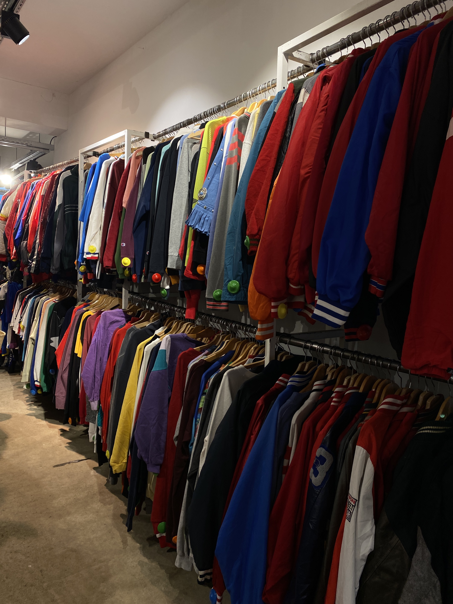

Duurzaam, vintage en tijdloos. Ontdek bij Timeless Fashion hoe jij kan bijdragen aan een beter milieu door vintage mode een tweede kans te geven. Shop uniek, shop per kilo.
De Kilo Store
Wist je dat...
Elke seconde wel een vuilniswagen vol met kleding weggegooid en verbrand wordt.
Een simpel katoenen shirt ongeveer 2700 liter water nodig heeft en een normale jeans wel zo een 7500 liter water.
Vintage shoppen 60% meer energie bespaart voor het maken van nieuwe kleding.
10% van de wereldwijde CO2-uitstoot afkomstig is van de mode-industrie.